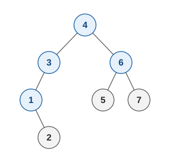

二元搜尋樹(Binary Search Tree, BST)是一種特殊的二元樹，在這棵樹上的每個節點，其左子樹的所有節點上的值都要小於自己，而右子樹的所有節點的值都要大於自己，例如：

在這樣的一棵樹上，其中序走訪恰好會是已排序的數字；並且你可以透過下列方式，從 root 開始，來搜尋某個值(key)是否存在於樹上：
- 如果 key 跟節點上的值相等，就是找到了。
- 如果 key 比節點上的值還小，就往左子樹走。
- 如果 key 比節點上的值還大，就往右子樹走。
- 如果想往左或右子樹走時，發現不能走，那就是 key 不在樹上。
在程式中進行上述操作的範例如下：
class TreeNode(object): def __init__(self, val, left=None, right=None): self.val = val self.left = left self.right = right def pre_order(root): if root: print(root.val, end=' ') pre_order(root.left) pre_order(root.right) def in_order(root): if root: in_order(root.left) print(root.val, end=' ') in_order(root.right) def search(root, key): if not root: return False if root.val == key: return True return search(root.left, key) if key < root.val else search(root.right, key) # Construct nodes = {i: TreeNode(i) for i in range(1, 8)} nodes[4].left = nodes[3] nodes[4].right = nodes[6] nodes[3].left = nodes[1] nodes[1].right = nodes[2] nodes[6].left = nodes[5] nodes[6].right = nodes[7] pre_order(nodes[4]) print() in_order(nodes[4]) print() print('Is 2 in the tree:', search(nodes[4], 2)) print('Is 0 in the tree:', search(nodes[4], 0)) print('Is 8 in the tree:', search(nodes[4], 8))上一個範例是直接對著現成的樹操作，但更多的時候，是要先根據給定的原始資料，例如 list 中的一串數字，來建立出 BST，步驟如下：
- 第一個數字當作 root。
- 接下來的每個數字，如果比節點上的值還小，就往左子樹走；比節點上的值還大，就往右子樹走。
- 如果想往左或右子樹走時，發現不能走，那就是要把該數字 insert 在該處。
我們用「4, 3, 6, 1, 2, 7, 5」來做示範，這個序列剛好可以建出本篇開始時的那棵樹：
class TreeNode(object): def __init__(self, val, left=None, right=None): self.val = val self.left = left self.right = right def pre_order(root): if root: print(root.val, end=' ') pre_order(root.left) pre_order(root.right) def in_order(root): if root: in_order(root.left) print(root.val, end=' ') in_order(root.right) # Construct seq = [4, 3, 6, 1, 2, 7, 5] root = None for v in seq: if root is None: root = TreeNode(v) else: ptr = root while True: if v < ptr.val: if ptr.left: ptr = ptr.left else: ptr.left = TreeNode(v) break else: if ptr.right: ptr = ptr.right else: ptr.right = TreeNode(v) break pre_order(root) print() in_order(root) print()Question: 是否有其他的序列，可以產生同樣的 BST？
Questions: 同樣給定這七個數字的情況下，最高跟最矮的樹各會長什麼樣子？在哪種樹上搜尋比較快（即時間複雜度為何）？
在某些應用場景中，你可能會需要更動 BST 的內容，亦即新增或刪除一些數字。新增數字的方式可以直接參考建立 BST 的方式進行，因為建立 BST 時，過程就是一個一個一個的把數字 insert 進來；但對於刪除數字，則需要分成以下幾種情況來處理：
- 如果要刪除 leaf node，則直接刪除之。
- 如果要刪除 internal node：
- 如果該 node 的左或右只有其中一邊有子樹，則直接將該 node 的 parent 與子樹相連。
- 如果該 node 兩邊都有子樹，則可從「左子樹最大者」跟「右子樹最小者」挑一個來取代自己。
相關實作在此就不示範，有興趣的同學可以自行研讀。此外，從以上內容也不難發現，BST 在建立和更動的過程中，是有可能愈長愈歪的，各位如果對於怎樣讓樹長的平衡一點有興趣，可以參考 AVL tree 或 red-black tree 的相關內容。